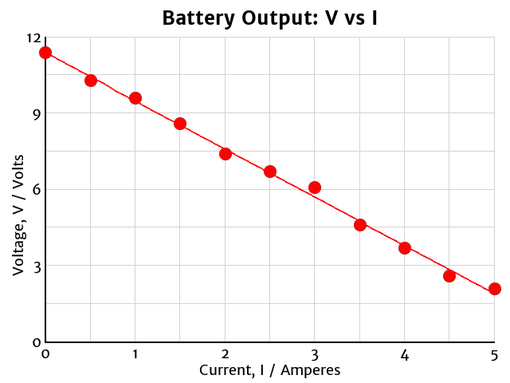

Scatter Plots
Battery Output
| Current I / Amperes | Voltage V / Volts |
|---|---|
| 0.0 | 11.4 |
| 0.5 | 10.3 |
| 1.0 | 9.6 |
| 1.5 | 8.6 |
| 2.0 | 7.4 |
| 2.5 | 6.7 |
| 3.0 | 6.1 |
| 3.5 | 4.6 |
| 4.0 | 3.7 |
| 4.5 | 2.6 |
| 5.0 | 2.5 |
- Graphs must be drawn on graph paper and should be large; use all available space.
- Graphs must have a descriptive title. The subtitle should identify the variables being plotted in the form “responding vs. manipulated.”
- Each axis must be labelled with the variable name, symbol, and units.
- The manipulated variable must be graphed on the horizontal (\(x\)) axis and the responding variable on the vertical (\(y\)) axis.
- Label the axes so that all data points fit on the graph, using as much space as possible.
- The “tick marks” on each axis must be evenly spaced.
- Tick marks must be numbered using a common interval and must start either at zero or a multiple of the interval used.
- For example, if you are counting by 3’s on your \(y\)-axis, your first labelled tick mark must be 0 or a multiple of 3.
- Data points must be drawn accurately and must not be connected.
- Only if the data shows a linear trend, you should add a best-fit line.
- The best-fit line should pass through the point representing the average of the \(x\) and average of the \(y\) data.
- A good best-fit line illustrates the trend of the data with equal numbers of data points above and below the line. The average distance between the data points and the best-fit line should be minimized.

Slope
Slope is a measure of the steepness of your best-fit line.
To calculate the slope, record the coordinates of the two visible endpoints of your best-fit line.
| Current I / Amperes | Voltage V / Volts |
|---|---|
| 0.0 | 11.4 |
| 5.0 | 2.0 |
- Calculate the rise by subtracting the y-coordinates (the responding variable): $$\Delta V = V_2 - V_1 =\mathrm{2.0\ V - 11.4\ V = -9.4\ V}$$
- Calculate the run by subtracting the x-coordinates (the manipulated variable): $$\Delta I = I_2 - I_1 = \mathrm{5.0\ A - 0.0\ A = 5.0\ A}$$
- Calculate the slope by dividing:$$k = {\Delta V\over \Delta I} = \mathrm{{-9.4\ V\over 5.0\ A} = -1.9\ V/A}$$
- Slope represents the rate at which the responding variable changes relative to the manipulated variable.
- The battery’s voltage drops about 1.9 volts for each ampere of current it produces.